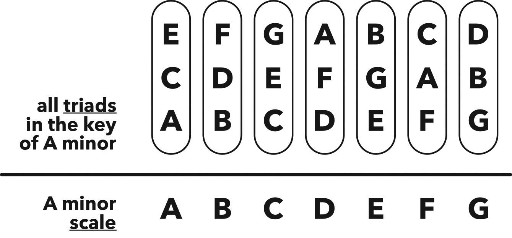

七个三和弦
Hack
Major and minor scales have seven notes, and seven notes mean seven triads, one triad starting from each note in the scale.
大调和小调都有七个音符，七个音符意味着有七个三和弦，分别以音阶中的每个音符为起始点。
Therefore, every scale has a family of seven triads living within it, and as long as we stick (for now) with these seven triads when we’re making music, it will always sound good.
因此，每个音阶内部都有一个由七个三和弦组成的家族。只要我们在制作音乐时坚持使用这七个三和弦，音乐听起来就会很好。
The first triad we get in any key is known as the root triad: a triad built on the first note of a scale.
音阶中的第一个三和弦被称为根三和弦：一个基于音阶第一个音符的三和弦。
Then we repeat the play-skip-play-skip-play triad building formula from each of the other notes to uncover the remaining triads in that key.
然后我们从其他每个音符出发重复演奏-跳过-演奏的三和弦构建公式，直到找到该调中的所有剩余三和弦。

Figure 10.1 All seven triads in the key of C major
图 10.1 C 大调中的所有七个三和弦

Figure 10.2 All seven triads in the key of A minor
图 10.2 A 小调中的所有七个三和弦
Chapter
Up until the early 1400s, the only harmony you’d hear would be the colourless perfect intervals: octaves, 5ths, and 4ths.
在 1400 年代初之前，唯一可以听到的和声就是那些单调的纯音程：八度音、五度音和四度音。
Interesting side note: when two notes an octave apart are played together, many non-musicians hear them as one note.
有趣的小知识：当两个相差一个八度的音符同时被演奏时，很多非音乐爱好者会以为只听到了一个音符。
This often occurs with 5ths as well, and sometimes even with 4ths.
这种情况也经常出现在五度音上，有时甚至是四度音。
Perfect intervals vibrate far too similarly to each other, and therefore our ears struggle to differentiate between them.
纯音程的振动彼此太过相似，所以我们的耳朵难以区分它们。
Six centuries ago, along came the mad scientist genius John Dunstaple.
六个世纪前，一位名叫约翰·邓斯泰布尔的天才兼疯狂的科学家诞生了。
Okay, he wasn’t really mad and he wasn’t really a scientist either: he was a composer and astrologer.
好吧，他其实并不疯狂，也不真的算是科学家：他是个作曲家和占星家。
But he was definitely a genius.
但毫无疑问，他是个天才。
And yes, this is the same John Dunstaple we met in chapter 3.
没错，这就是我们在第三章中遇到的约翰·邓斯泰布尔。
No exaggeration, J.D. changed music forever.
毫不夸张地说，J.D. 永远改变了音乐。
Bear in mind that coming straight out of centuries of perfect intervals, his never-before-heard magic 3rds sounded way more intense than they do now.
要知道，在那几个世纪里，音乐只能听到那些单调的纯音程，而他那从未听过的神奇三度音，当时听起来比现在强烈得多。
Play your mum or your nan some proper metal – maybe a little Emperor – and I reckon they’d react kinda like the people did six hundred years ago upon first hearing triads.
你可以想象，如果给你的妈妈或奶奶播放一些正宗的金属音乐——比如一些皇帝乐队的作品——她们的反应大概就像六百年前人们第一次听到三和弦时的感觉一样。
Extreme!
极端震撼！
Onto the practical use of this newfound wizardry.
那我们来看看这个新发现的魔法是如何实际应用的。
You already know that the major and minor scales have seven notes, so how many triads can we build from each scale?
你已经知道大调和小调都有七个音符，那么我们可以从每个音阶构建多少个三和弦？
Yep, seven notes mean seven triads, one triad starting from each note.
是的，七个音符就意味着七个三和弦，每个音符作为起始点构建一个三和弦。
Let’s take things back to C major, the only major scale with no key signature, so that we can work exclusively with the white notes, which is ideal for visualising intervals.
我们以 C 大调为例，这是唯一一个没有调号的大调，所以我们可以完全使用白键，这样便于可视化音程。
The first triad we get in the key of C major is: C E G.
C 大调中的第一个三和弦是：C E G。
This is known as the root triad, as it is built on the first note in the scale.
这个三和弦被称为根三和弦，因为它是基于音阶的第一个音符构建的。
If we do this same formula again from the second note in the scale, we get the second triad found in the key of C major: D F A.
如果我们从音阶的第二个音符重复同样的公式，就可以得到 C 大调的第二个三和弦：D F A。
Then the same again from the third note, giving us the third triad of E G B, and so on.
然后再从第三个音符重复同样的公式，得到 C 大调的第三个三和弦：E G B，依此类推。
Here are all seven:
以下是所有七个三和弦：
Below are all seven triads in the key of A minor, found using the same process as above:
下面是使用上述相同过程在 A 小调中找到的所有七个三和弦：
Every scale has a family of seven triads living within it, and as long as you stick with these seven triads when you’re making music, it will sound good.
每个音阶内部都包含一组七个三和弦，只要你在创作音乐时使用这七个三和弦，就一定会听起来很好。
We can and will learn about using friend chords that are not represented here, but for now, let’s keep it in the family, as that’s the safest way to start your musical journey.
我们以后会学习如何使用这里没有提到的其他朋友和弦，但目前，让我们先在这个家族内部进行，因为这是开始你的音乐旅程最安全的方式。